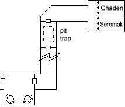
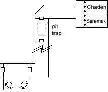
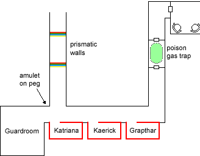

he darkness was absolute, nor was there any sound save the reassuring whoosh of her own breathing. The feeble torchlight and echoing footsteps of the ducal guard having receded back down the hall some time ago, Chaden Contarian leaned against the iron bars and tried to figure out how to extricate herself from this mess.

he darkness was absolute, nor was there any sound save the reassuring whoosh of her own breathing. The feeble torchlight and echoing footsteps of the ducal guard having receded back down the hall some time ago, Chaden Contarian leaned against the iron bars and tried to figure out how to extricate herself from this mess.

"Hello?" called a male voice from the darkness. As she was brought in Chaden had glimpsed another set of bars to an adjacent cell, but had not realized it held another prisoner. That prisoner, Seremak al Astar dom Draconim, had been brought in earlier in the day and very much wished to find his companion and leave. The guards had confiscated Chaden's primary weapons, but had not found her favorite dagger. The lock on her cell was old and unsophisticated, and yielded easily. A moment later Seremak was also free. That left only the small task of making their way out of the Ducal prison, in complete darkness, without being caught. Simple.
The first door was unlocked, but beyond it was a pit trap which opened as Seremak stepped through. He leaped to safety without difficulty. Creeping around the edge of the pit led to a second door. Chaden checked it for traps, finding the complete darkness only a slight hinderance. An extremely long hallway led to a right hand turn and another door, with a small room beyond.
There were two chairs and a rickety table in the room, which Seremak promptly smashed for use as clubs. The hallway beyond took an abrupt left turn and ended at another door. Chaden found the trap and thought she had disarmed it, but plugging a gas trap in complete darkness is an imprecise business. The two adventurers held their breath and rushed through to the room beyond and thence into another hallway.
Chaden's diary
After being in complete darkness and silence for so long, the faint glimmer of light in this hall was a relief. I could also make out the sound of several voices, muffled by distance. I peeked around the corner, where the bright light made my eyes hurt. The hallway continued on with openings on either side, ending in a room from which the bright light and voices came.

I crept down the hallway. The walls on one side changed from the finished stone of the rest of the prison to a black, glossy material. The openings on the far side of the hallway were cells lined entirely with the black stuff and holding more prisoners. I've heard of cells lined with materials to suppress magic, I guess that must be it. There were no bars, the prisoners were confined with a one-way wall of force. Once in, it was impossible to leave without the right key. The first cell held a dwarf, slumped against the wall and snoring loudly. The second cell held an elvish woman, and the third held a half-elvish woman.
The Narrator
Instantaneously recognizing fellow Player Characters, Chaden agreed to help free them. Seremak started with Kaerick, the elvish bard in the second cell. Seremak reached in to try to pull Kaerick to safety, but had trouble withdrawing his hand and had to drop the club he had reached in with.
At that point a guard could be heard approaching from another hallway to the north. Chaden and Seremak hurried back down the hall into the darkness. The guard, who wore a golden amulet over surcoat and chain mail, turned and walked into the far room from whence the light and the voices of 4-5 more guards were coming. Kaerick believed it was the amulet worn by each guard which allowed them to freely enter and leave the magical cells, and a spare amulet could be seen on a peg near the room with all of the guards. Frisking procedures at the ducal prison being obviously deficient, Seremak still had a scroll of Invisibility which Chaden used to surreptitiously lift the amulet.
Using the amulet Kaerick and Katriana were able to simply walk out of their cells. Grapthar the dwarf, identifiable by the "NPC" logo floating silently above his head, was also released. Chaden tried to scout the northern hallway from whence the guard had come, but neglected to wear the amulet. She triggered a trap which activated two prismatic walls, boxing her in. Alarms blared and the guards scrambled out, quickly subduing the unarmed party members outside of their cells.
Chaden, trapped between the magical walls, pondered her options. She could hear more ducal guards approaching. Still invisible, she lay down at the base of the wall and waited. As prismatic walls dropped she saw a veritable sea of guards approaching from the north. Twisting silently, she avoided being kicked or touched by any of them. As the last of the fifteen guards passed Chaden stood, and might have made it if not for the wizard with a Gem of True Seeing. She tumbled past the wizard, who dispelled her invisibility with a wand. Chaden next avoided the two guards accompanying the wizard and began to run, but more guards materialized beyond them. How many? As many as it took to capture her.
Out of the corner of her eye as the guards surrounded her, Chaden thought she saw a heavy metallic golem stomping down the hallway. She would never be sure...
"You have all been convicted of crimes for which you deserve execution. Only I, as Duke of Urnst, have the power to stay those executions."
"Minstrel Kaerick, you have viciously slandered the House of Lorinar with your performances. And you, Warrior Seremak killed a Captain of the Guard."
"Burglar Chaden, who knows where you would be with your treasure by now if you had not fallen from that rooftop onto Captain Norlik and his men?"
"Warrior Grapthar, a number of citizens witnessed you committing a vicious, cold-blooded murder of a man who put up no defense."
"And you, Adept Katriana, have been seen by an entire village practicing illegal magicks."
"There is only one here who does not deserve to be executed." The Duke beckoned to someone in the shadows, and a gnome stepped forth. "Magician Edwin, I am honored that the Wizard's Tower saw fit to offer your services to me as payment of this year's taxes."
The party was not, in fact, executed immediately as this would have made for a relatively lame campaign. The Seer explained the terms of the offer: perform two tasks for the Duke, one small and one large, and the sentences would be commuted to time served. Having no other options, the five condemned prisoners agreed. The Seer placed them under a geas to enforce the agreement (which, having been willingly accepted, allowed no saving throw). Edwin was not subject to the geas, but bound by his obligation to the Wizard's Tower to serve the Duke for one year.
"I am having a small problem with my festhall, the Golden Cockatrice," said the Duke. "Ruffians are robbing me blind by cheating. You will go to the Cockatrice and speak to Vaja, who will explain your first task."
Excepts from Edwin's Enormous Trove of Trivia
Dragonfire (noun): Each player begins by placing a standing wager. Once each player has made a standing wager, the dealer shuffles the tiles and arranges them facedown in a 5X5 formation.
The first player places a bet which cannot exceed his standing wager. Then he indicates any 2 tiles for the dealer to turn over. If the 2 tiles are the same suit, the player winsthe same amount he bet. If the two tiles are the same suit and color the player wins twice the amount he bet. If the two tiles do not match the player loses his bet. If the player won, the dealer picks up the 10 tiles in the horizontal rows containing the winning tiles, shuffles them and re-deals those 10 tiles. If the tiles are in the same row the dealer shuffles the vertical columns instead.
If the player lost the dealer turns over the tiles but leaves the second tile face up. The next player bets, subject to the same rules. If the matching tile to one that was drawn in a previous turn is drawn (even if there is no match) the tiles are all re-shuffled.
If a player draws two matching tiles, he can choose to continue his bet (before the dealer re-shuffles) and now includes the standing wager. He then selects another tile. If the selected tile matches the winning pair then the player collects 5 times the amount of his new bet. If it does not match he loses everything.
There is one Dragonfire tile. If at any time it is turned up the player loses his entire bet, including the standing wager. All other players lose half of their standing wagers. The player's turn ends immediately and the column containing the Dragonfire tile is re-shuffled.
The Narrator
Katriana wandered into the central courtyard of the establishment, where a cage held the club's namesake: three cockatrices. A startlingly realistic statue of a human merchant poking a finger at the cage served as a reminder of their petrification ability. One of the birds spoke to Katriana: "Polly wants a cracker. Actually, Polly wants out of here. I'm a princess polymorphed into the form of a cockatrice." Katriana decided that the more likely explanation was the nearby table of Gnomes having fun at her expense.
Eventually the party claimed a Dragonfire table and began to play, surreptitiously paying more attention to the rest of the gambling hall than to their own table. Roughly an hour later an impeccably dressed human entered the gaming area, with six muscular companions. The man took an open seat at one of the gaming tables, his companions spread out around the bar. A discreet nod from Vaja indicated that this was the primary suspect. Indeed, within a few minutes the man began to win.
The party's own game of Dragonfire was continued merely for effect, as everyone concentrated on the nearby table. Katriana noticed the well-dressed man flicker his fingers in what appeared to be hand signals to his cohorts. Seremak got a sense that the player was using some sort of magic item, so Edwin surreptitiously cast Detect Magic. Concentrating for a few rounds, he determined the following:
Katriana finally caught sight it: the suspect was switching tiles between the gaming table and his belt pouch at blinding speed. In an enormous tactical blunder Edwin decided to confront the man, using the pre-arranged code phrase, "It really is a game of skill, isn't it?"
Transcript of confession of Thug #5
| Detective: | Let the record show that the subject has agreed to cooperate with this investigation into recent events at the Golden Cockatrice in exchange for leniency from the great Duke Justinian Lorinar of Urnst. Subject has pled guilty to one count of unlawful unsheathing of a weapon in a Ducal establishment, one count of disorderly conduct, and one count of tax evasion. His lordship the Duke has graciously agreed not to impose the death penalty for these serious crimes in exchange for this cooperation. |
| Thug #5: | Very kind. |
| Detective: | The name we have in our records here is "Thug Number, the fifth." Is that correct? |
| Thug #5: | Yup, thats me. The Number family line goes way back. |
| Detective: | Could you explain your purpose in the Golden Cockatrice that day? |
| Thug #5: | I was there as "muscle". Thats a technical term we use in the trade, it means an associate whose main purpose is in an intimidative role. We deplore violence, you understand. |
| Detective: | You're saying you don't know how to fight? |
| Thug #5: | I said I deplore violence. I am, however, exceedingly good at it. |
| Detective: | Very well. What was the primary reason for you and your companions being in the Golden Cockatrice that day? |
| Thug #5: | My employer had developed a system for cheating at Dragonfire. He had taken so many ranks in Sleight of Hand that he was able to swap tiles between the playing board and his belt pouch with such astonishing speed and accuracy that no one except a Player Character would be able to succeed in a Spot check against him. |
| Detective: | So the presence of Player Characters in the establishment caused some difficulty to this enterprise? |
| Thug #5: | I'll say. When the gnome blew his Bluff check and my employer realized they were on to us, I got a sinking feeling in the pit of my stomach that the easy money was up. |
| Detective: | What happened then? |
| Thug #5: | My employer overturned the gaming table to dump all of the tiles onto the floor. Though that wasn't part of the series of hand signals he'd worked out with us we figured that meant he wanted us to move in. I took a swipe at the gnome, but he's more hat than head if you know what I mean. That's part of the plea bargain, right? |
| Detective: | Yes, the melee in the Golden Cockatrice is part of the deal. What happened then? |
| Thug #5: | We figured out who was working with the gnome when the lady jumped up on their table and started shooting sleep arrows. Most of us moved to concentrate on the Gnome, and one of my associates moved to take out the archer. Then the bear showed up. I still don't understand that part. |
| Detective: | Forbidden Druidic magic. The normal penalty is death, but the Duke granted special dispensation in this case. Shame, that. Go on. |
| Thug #5: | The bear kept us busy, let me tell you. After the one swipe at the Gnome's hat, both I and Thug Number the fourth were completely occupied with the bear. |
| Detective: | Thug Number the fourth... Any relation? |
| Thug #5: | Elder brother. |
| Detective: | I see. |
The Narrator
Katriana summoned a black bear, which caused a bit of a panic as people ran out of the establishment. The bear mauled the thug who had slashed Edwin's hat, and later dropped another of the thugs.
Seremak leaped over the Dragonfire table to attack the cheating rogue, scoring a critical hit for 20 points of damage. The rogue found it prudent to withdraw from combat to the other side of the room. Seremak pursued, shrugging off the poisoned darts thrown at him. Seremak scored another hit, dropping the rogue.
One of the thugs jumped up on the bar, thinking to run down its length and leap to attack Seremak. Vaja clocked the thug with an enormous iron-shod club halfway down the bar, and then knocked him senseless.
Kaerick and Chaden peppered two of the henchmen with ranged attacks, dropping one and severely wounding a second. Grapthar fumbled the first attack with his flaming dwarven axe, setting the bar on fire (which was quickly extinguished). His second attack dropped the wounded thug.
The remaining combatent escaped, but the rest had been incapacitated. The party dragged the captives to the central courtyard and stabilized those with severe injuries. The suspect had a complete set of Dragonfire tiles in his belt pouch, identical to those used by the Golden Cockatrice.
Recovered from the cheating rogue and his five associates.
The Narrator
The rogue's name was Cheale. Chaden recognized the wand in his belt pouch, though she did not explain. Cheale, apparently resigned to his fate, revealed that he had been a highwayman before deciding that cheating at Dragonfire made for an easier living. His final ambush before retiring from that line of work was of a courier. Along with the wand the courier had a thick bundle of papers, which Cheale burned to avoid anything being traced back to him.
"You must preserve the Ghost Gem at all costs, or your former stations await you," lectured the Duke as the party filed out of the chamber.
The journey to the Ghost Tower took five days, after which the guards turned back with the horses and left the party to explore the ruins.